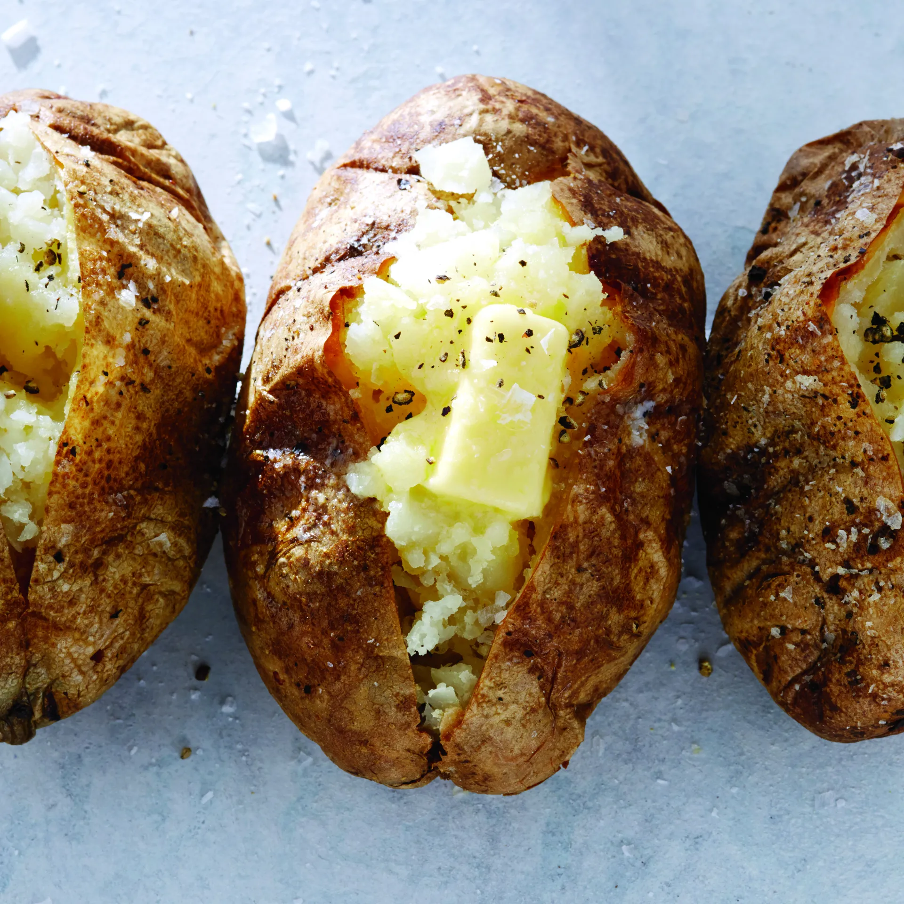

Baked Potato

Description
Ah, yes. The baked potato. Perhaps among the simplest of recipes, but also certainly among the most delicious.
With hardly any ingredients or prep work required, the baked potato is the perfect low effort, hearty side dish.
It can be served simply, or loaded up with any number of fixings.
Ingredients
- 1 russet potato
- Olive oil
- Coarse salt
Optional fixings
- Butter
- Black pepper
- Shredded cheddar cheese
- Sour cream
- Chives
- Bacon bits
Steps
-
Preheat oven to 425F. While preheating, prep the potato by scrubbing thoroughly and drying. Poke holes
all over with a fork. Rub a thin layer of olive oil all over the potato and sprinkle with salt.
-
Place potato in oven, either directly on rack or on a baking sheet lined with parchment paper, if desired.
-
Bake for 45-60 minutes, or until skins are crisp and a fork easily pierces the potato. Allow to cool slightly
before slicing open and digging in!
- Optionally, add butter, black pepper, or any of the other recommended fixings to make a loaded baked potato.